Back to main page
Help
Filters, liquid filters, gas filters
Name
ISO10628-RegNr
ISO14617-RegNr
Possible representations
Symbol
Filter
ISO10628-X8116
ISO14617-X2601
http://data.posccaesar.org/rdl/RDS300689
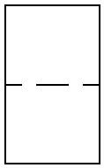
Liquid filter
-
-
Bag filter / candle filter / cartridge filter for liquids
ISO10628-X8117
ISO14617-X2606
http://data.posccaesar.org/rdl/RDS4316489029
http://data.posccaesar.org/rdl/RDS43165905223
http://data.posccaesar.org/rdl/RDS43165905237
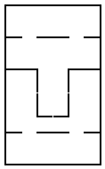
Fixed bed filter for liquids
ISO10628-X8118
ISO14617-X2609
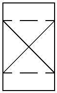
Suction filter
ISO10628-X8019
-
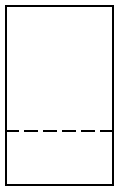
Rotary filter
ISO10628-X8119
ISO14617-X2603
http://data.posccaesar.org/rdl/RDS4316851774
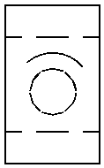
Rotary filter with scraper
ISO10628-X8120
-
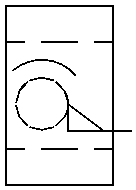
Belt filter for liquids
ISO10628-X8121
ISO14617-X2608
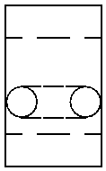
Filter press
ISO10628-X2611
ISO14617-X2611
http://data.posccaesar.org/rdl/RDS43166359217
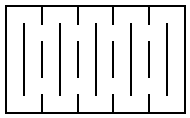
Ion exchange filter
ISO10628-X8020
ISO14617-X2633
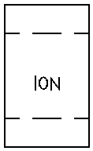
Biofiltration filter
ISO10628-X8021
ISO14617-X2634
http://data.posccaesar.org/rdl/RDS43164891249
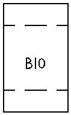
Gas filter
ISO10628-X8122
-
http://data.posccaesar.org/rdl/RDS4316755843
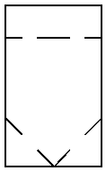
Bag filter / candle filter / cartridge filter for gases
ISO10628-X8022
-
http://data.posccaesar.org/rdl/RDS4316489029
http://data.posccaesar.org/rdl/RDS43165905223
http://data.posccaesar.org/rdl/RDS43165905237
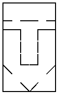
Fixed bed filter for gases
ISO10628-X8023
-
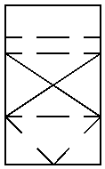
HEPA
ISO10628-X8024
-
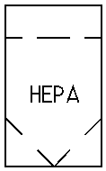
Belt filter for gases
ISO10628-X8025
-
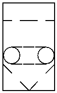